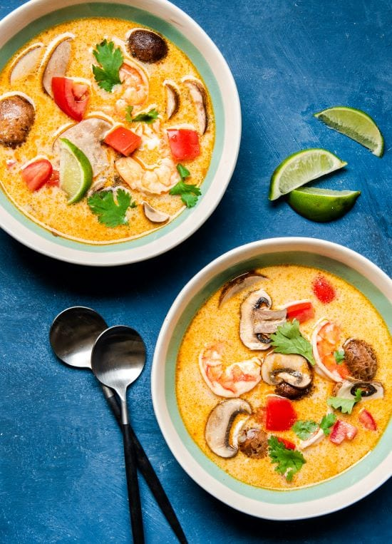

← Back
Tom Kha Goong Recipe

Description
The base of tom kha soup is typically seasoned chicken broth combined with coconut milk for a luxuriously silky mouthfeel.
It gets its distinct hot and sour flavor from aromatics like galangal, lemongrass, red curry paste, fish sauce, and fresh lime.
Ingredients
- 10-12 peeled and deveined shrimp
- 1 cup quartered mushrooms
- 1 can coconut milk
- 2 cups chicken broth
- 1 tbsp coconut oil
- 2 lemongrass stalks, cut in 2" pieces and bruised with the back of a knife
- 1 shallot, sliced
- 3 cloves garlic, smashed
- 4 slices galangal - about a 3” piece
- 4-5 kaffir lime leaves slightly torn
- 1 tbsp cilantro stems
- 2-3 thai birds eye chilies
- 2 tbsps Thai red curry paste
- 2 tbsps coconut aminos
- 2 tbsps Red Boat fish sauce
- Juice from 1 lime
- Cilantro for garnish
Steps
- Heat coconut oil in a pot on medium heat.
- Add lemongrass, shallot, garlic, chilies, galangal, kefir lime leaves, cilantro stems, and red curry paste and saute for 2-3 minutes or until the shallot has just softened.
- Pour in the coconut milk, stir, then add in the chicken broth.
- Bring to a boil, then immediately cover and reduce to low heat. Simmer for 25-30 minutes.
- Remove the aromatics using a slotted spoon.
- Bring to medium heat and add in the mushrooms and shrimp. Simmer for 3-4 minutes or until shrimp is pink and cooked through (frozen shrimp may take closer to 5-6 minutes).
- Shut off heat, add in fish sauce, coconut aminos, and lime juice. Taste and adjust seasonings.
- Top with cilantro and more lime juice and serve. Enjoy!
Assignment from The Odin Project | Ari Ferreira ©